조경기사 (2014-05-25 기출문제)
1과목: 조경사
1. 한국정원의 특징이 아닌 것은?
- 신선사상 배경
- 풍류생활의 장
- 원지의 단조로움
- 곡선의 윤곽선 처리
(정답률: 71%)

2. 도시공원체계 수립 등 현대 미국 조경의 중흥에 획기적인 공로를 한 조경가는?
- 다우닝
- 옴스테드
- 팩스턴
- 하바드
(정답률: 83%)
3. 영국 자연풍경식 정원의 발달에 기여한 조경가의 작품 연결이 올바른 것은?
- 윌리엄 쳄버 – 켄싱턴원
- 윌리엄 켄트 – 큐 가든
- 찰스 브리지맨 – 스토우원
- 험프리 랩턴 – 스투어헤드
(정답률: 75%)
4. 다음 중 정자에 만들어진 방의 위치가 다른 하나는?
- 소쇄원 광풍각
- 담양 명옥헌
- 예천 초간정
- 화순 임대정
(정답률: 58%)
5. 중국 청나라 시대 이화원에 대한 설명으로 틀린 것은?
- 중국의 고전적인 정원의 대표작으로 중국에서 가장 규모가 크고 보존이 잘 된 황가의 이궁이다.
- 서태후는 청의원을 이화원이라 개명하는 등 이화원 재건의 주역이다.
- 만수산과 곤명호로 이루어졌으며 만수산의 요지에 배운전과 불향각이 있다.
- 퇴수산에는 태호석을 주로 한 석순을 배치하여 인공암산의 모습을 나타낸다.
(정답률: 57%)
6. 옴스테드(Frederick Law Olmsted)의 센트럴파크(Central Park)의 설계 특징이 아닌 것은?
- 자연경관의 비스타(vista)
- 정형적인 몰(mall)
- 입체적 동선체계
- 넓은 커낼(canal)
(정답률: 67%)
7. 이탈리아와 프랑스의 전통조경 발달과정의 차이점을 설명한 것 중 옳은 것은?
- 프랑스는 일찍부터 도시국가가 발달하고 부(富)를 축적하여 교외 구릉지에 빌라가 발달하였다.
- 이탈리아는 도시주택 겸 수렵용 건물인 성관이 발달하였다.
- 이탈리아는 프랑스보다 다이나믹한 수경(水景)중심에서 잔잔하고 넓은 수경으로 발달하였다.
- 프랑스의 조경은 이탈리아보다 화단 파르테르(Parterre)를 중요시 하였다.
(정답률: 76%)
8. 무로마찌(室町) 시대 정원의 특징으로 옳지 않는 것은?
- 석조(石組)가 두드러지게 중요시되어 과거 지형위주의 경향에서 벗어나게 되었다.
- 묵화(墨畵)적인 산수(山水)를 사실적으로 취급한 것에서 점점 추상적인 의장으로 발전하였다.
- 응인(應仁)의 전란 이후 제약을 받아 사찰도 재정이 부족하여 부지가 협소한 장소에 조성된다.
- 수목의 비중이 중요시 되어 후에는 상록활엽수가 정원 의장의 가장 중요한 요소로 등장한다.
(정답률: 70%)
9. 다음 중 조성시기가 빠른 순으로 나열된 것은?
- 영양 서석지 → 강진 다산초당 → 대전 남간정사 → 서울 부암정
- 영양 서석지 → 대전 남간정사 → 강진 다산초당 → 서울 부암정
- 대전 남간정사 → 영양 서석지 → 강진 다산초당 → 서울 부암정
- 대전 남간정사 → 강진 다산초당 → 영양 서석지 → 서울 부암정
(정답률: 66%)
10. 고려시대 인공폭포를 조성하고 석가산을 쌓았으며 특이한 정자를 많이 건립한 군주는?
- 예종
- 의종
- 명종
- 공민왕
(정답률: 50%)
11. 일본 조경사에서 곡수연이 시작된 시기는?
- 비조(아스카)시대
- 평안(헤이안)시대
- 실정(무로마치)시대
- 도산(모모야마)시대
(정답률: 41%)
12. 영국 르네상스 정원을 구성하는 정원의장으로 볼 수 없는 것은?
- 토피아리(topiary)
- 총림(bosquet)
- 문주(門注)
- 매듭화단
(정답률: 56%)
13. 우리나라의 전형적인 주택정원의 전통 양식은?
- 앞뜰을 중요시한 자연풍경식
- 안뜰을 중요시한 노단건축식
- 뒤뜰을 중요시한 후원식
- 안뜰을 중요시한 자연풍경식
(정답률: 75%)
14. 이탈리아 정원에 있어서 문예부흥(르네상스)이 끼친 가장 큰 영향은?
- 성곽(城廓)정원에서 탈피하여 별장 중심의 정원으로 전환되었다.
- 실용(實用)주의 정원으로 발전하였다.
- 대중을 위한 공공조경에 관심을 쏟았다.
- 자연과의 조화를 강조하였다.
(정답률: 71%)
15. 궁남지 연못의 섬을'방장선산(方丈仙山)'의 상징이라고 기록한 문헌은?
- 동경잡기
- 동국여지승람
- 삼국사기
- 삼국유사
(정답률: 75%)
16. 일본에 백제사람 노자공이 정원을 조성하였다는 기록이 일본서기에 기록되어 있다. 이 때 반영된 주요 사상은?
- 불교사상(佛敎思想)
- 상세사상(常世思想)
- 신선사상(神仙思想)
- 도교사상(道敎思想)
(정답률: 67%)
17. 색상이 푸르고 깎아 지는 듯하며 골짜기에 구름을 감춘 듯 한 모양으로 이끼가 잘 자라는 괴석을 양화소록에서는 최상으로 언급하고 있다. 이 돌의 명칭은?
- 운경석
- 산경석
- 금경석
- 차경석
(정답률: 60%)
18. 각 국가별로 중요 조경유적의 연결이 바른 것은?
- 고구려 – 궁남지(宮南池)
- 신라 – 임류각(臨流閣)
- 고려 – 동지(東池)
- 백제 – 감은사(感恩寺)
(정답률: 64%)
19. 중국에서 조경에 관계되는 한자의 의미 설명이 잘못된 것은?
- 원(園) : 과수류를 심었던 곳으로 울타리가 있는 공간
- 유(囿) : 짐승이나 조류를 기르던 울타리가 있는 공간
- 원(苑) : 짐승이나 조류, 식물 등을 기르거나 자생하던 울타리가 있는 공간
- 정(庭) : 건물이나 울타리에 둘러싸인 평탄한 뜰
(정답률: 80%)
20. 조선시대 신궁인 종묘의 배치와 조경적 특징에 부합되지 않는 것은?
- 정궁을 중심으로 한 좌묘우사(左廟右社)의 배치
- 배산임수의 지세를 택하여 감산(坎山)을 주산으로 배치
- 방지원도형 연못과 시원한 박석포장의 도입
- 괴석과 화목을 도입한 화계와 정자의 활용
(정답률: 48%)
2과목: 조경계획
21. 주거단지계획시에 칼데삭(cul-de-sac) 도로 이용의 장점을 가장 잘 설명하고 있는 것은?
- 차량의 접근성을 높일 수 있다.
- 차량동선을 가장 짧게 할 수 있다.
- 단지 내 보행동선을 가장 짧게 할 수 있다.
- 차량으로 인한 위험이 없는 녹지를 단지 내에 확보할 수 있다.
(정답률: 82%)
22. 주택건설기준 등에 관한 규정에서 공동주택을 건설하는 주택단지의 대지 안에 확보하여야 하는 녹지면적의 비율은 얼마 이상으로 조치하여야 하는가?
- 20/100
- 30/100
- 4/10
- 5/10
(정답률: 58%)
23. 주거단지 경관계획의 기본방향으로 가장 적합하지 않은 것은?
- 자연조건의 반영
- 조화와 개성의 부여
- 획일적 시각적 이미지
- 커뮤니티 감각의 부여
(정답률: 75%)
24. 환경영향평가법 시행규칙상 전략환경영향평가서의 계획의 승인 등이 된 후 보존 기간은?
- 3년
- 5년
- 10년
- 20년
(정답률: 51%)
25. GIS의 자료처리 및 구축을 위한 전반적인 작업과정으로 옳은 것은?
- 자료입력 – 자료수집 – 자료조작 및 분석 – 자료처리 – 출력
- 자료수집 – 자료입력 – 출력 – 차료처리 – 자료조작 및 분석
- 자료수집 – 자료조작 및 분석 – 자료처리 – 자료입력 – 출력
- 자료수집 – 자료입력 – 자료처리 – 자료조작 및 분석 – 출력
(정답률: 61%)
26. 개발밀도관리구역 외에 지역으로서 개발로 인하여 도로, 공원, 녹지 등 대통령령으로 정하는 기반시설을 설치하거나 그에 필요한 용지를 확보하게 하기 위하여 지정·고시하는 구역은? (단, 국토의 계획 및 이용에 관한 법률을 적용한다.)
- 기반시설부담구역
- 개발밀도관리구역
- 지구단위계획구역
- 용도구역
(정답률: 37%)
27. 유원지에서 위락활동의 수요에 직접적으로 영향을 주는 요소로 가장 거리가 먼 것은?
- 토지가격
- 지리적인 위치
- 이용자의 수입
- 교육정도
(정답률: 73%)
28. 생물다양성을 증진시키고 생태계 기능의 연속성을 위하여 생태적으로 중요한 지역 또는 생태적 기능의 유지가 필요한 지역을 연결하는 생태적 서식공간을 무엇이라고 하는가?
- 생태축
- 생태통로
- 생태경관보전지역
- 자연유보지역
(정답률: 51%)
29. 다음 중 근린주구(neighborhood) 내에서 자동차 동선계획 시 고려사항으로 가장 거리가 먼 것은?
- 도로의 위계 및 밀도와 종류를 고려하여 계획한다.
- 주변 버스 또는 지하철 등의 외부동선 연계 보다는 지구 내 안전성 위주로 독립 계획한다.
- 요일별, 계절별로 교통량 변동사항을 고려해야 한다.
- 가급적 보행전용동선을 단절하지 않도록 계획한다.
(정답률: 68%)
30. 도시조경의 목표로서 가장 거리가 먼 것은?
- 친환경적 도시건설
- 친인간적 도시건설
- 아름다운 도시건설
- 교통 편의적 도시건설
(정답률: 65%)
31. 다음 중 노외주차장인 주차전용건축물의 건폐율, 용적률, 대지면적의 최소한도 및 높이 제한 등 건축제한에 대한 기준으로 틀린 것은?
- 건폐율 : 100분의 90이하
- 용적률 : 1,000퍼센트 이하
- 대지면적의 최소한도 : 45제곱미터 이상
- 대지가 너비 12미터 미만의 도로에 접하는 경우 : 건축물의 각 부분의 높이는 그 부분으로부터 대지에 접한 도로의 반대쪽 경계선까지의 수평거리의 3배
(정답률: 42%)
32. 도시·군 계획시설의 결정·구조 및 설치기준에 관한 규칙 상 용도지역별 도로율 기준이 틀린 것은?(단, 주간선도로의 도로율은 제외한다.)
- 주거지역 : 20% 이상 30% 미만
- 상업지역 : 25% 이상 35% 미만
- 공업지역 : 10% 이상 20% 미만
- 녹지지역 : 5% 이상 15% 미만
(정답률: 56%)
33. 이용자 행태의 현장 관찰의 이점이 아닌 것은?
- 관찰자가 있음으로 이용자의 행태에 변화가 생길 수 있다.
- 이용자의 행태를 연속적으로 살필 수 있다.
- 예기치 못한 행태를 도출해 낼 수 있다.
- 이용자 행태가 발생하는데 있어서 영향을 미치는 주변 분위기 조사가 가능하다.
(정답률: 73%)
34. 레크리에이션 적정수와 산정을 위한 중력모델의 내용으로 옳은 것은?
- 현재와 장래의 수요 예측
- 인구와 거리에 따른 단기적 수요 예측
- 여러 변수에 의한 장기적 수요 예측
- 외부발생 변수를 고려한 수요 예측
(정답률: 43%)
35. 유원지를 설치하고 관리하는 상세한 내용을 규정하고 있는 것은?
- 국토기본법
- 자연공원법
- 도시공원 및 녹지 등에 관한 법률
- 도시·군계획시설의 결정·구조 및 설치기준에 관한 규칙
(정답률: 47%)
36. 옥상정원의 인공지반을 녹화할 때 가장 우선적이고, 중요하게 고려해야 할 하중은?
- 고정하중
- 적재하중
- 적설하중
- 풍하중
(정답률: 60%)
37. 사람들에게 내재해 있는 수요로 적당한 시설, 접근수 단, 정보가 제공되면 참여가 기대되는 수요는?
- 잠재수요
- 유도수요
- 표출수요
- 유효수요
(정답률: 69%)
38. 환경심리학의 특징에 관한 설명 중 적합하지 않은 것은?
- 환경과 인간행태의 관계성을 종합된 하나의 단위로서 연구한다.
- 현실적인 인간행태에 대한 문제 해결을 위한 이론 및 그 응용을 연구한다.
- 도심지 환경영향평가시 계량화된 주요지표로 이용된다.
- 환경과 인간행태 상호간에 영향을 주고받는 상호작용을 연구한다.
(정답률: 61%)
39. 공원자연보존지구의 완충 공간(緩衝空間)으로 보전할 필요가 있는 지역은?
- 공원자연환경지구
- 공원마을지구
- 공원문화유산지구
- 공원집단시설지구
(정답률: 67%)
40. 공원 내에 연못을 조성하고자 할 때 계획기준으로 옳지 않은 것은?
- 연못의 배치는 계획 및 설계대상 공간 배수시설을 겸하도록 지형의 높은 곳에 배치한다.
- 연못 주변의 하천이나 계곡의 물·지표면의 빗물 등 자연 급수와 지하수·상수·정화된 물(중수) 등 인공 급수 등을 여건에 맞게 반영한다.
- 연못의 평면 및 단면 형태 시 수리, 수량, 수질의 3가지 요소를 충분히 고려한다.
- 못 안에 분수 및 조명시설 등의 시설물을 배치할 경우에는 물을 뺀 다음의 미관을 고려해야 한다.
(정답률: 71%)
3과목: 조경설계
41. 조경설계기준상'환경조형시설'의 설계원칙 요소로 가장 부적합한 것은?
- 인간 척도 적용
- 조형성
- 환경적 지속성
- 독창적 고비용성
(정답률: 74%)
42. 식재기반을 조성하기 위해서는 토양이 중요하다. 토양분석에 있어서 토양의 입자 크기가 옳은 것은?
- 모래 : 직경 5~2mm
- 모래 : 직경 2~0.⑤mm
- 미사 : 직경 0.5~0.01mm
- 미사 : 직경 0.01~0.0⑤mm
(정답률: 46%)
43. 먼셀 표색계에 대한 설명으로 맞지 않는 것은?
- 먼셀은 3차원 색공간을 색상, 명도, 채도의 차원으로 나누었다.
- 눈으로 색을 보아서 색을 느끼는 지각에 따라 측도를 정한 것이다.
- 혼합하는 색의 양이 많고 적음에 따라 만들어 순색, 흰색, 검정의 각 함유량으로 표시한다.
- 색상, 명도, 채도의 기호는 H, V, C이고 표기법은 HV/C로 한다.
(정답률: 59%)
44. 조경설계 도면의 치수를 나타낸 그림 중 가장 나쁘게 표현한 것은?
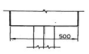
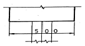
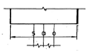
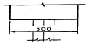
(정답률: 70%)
45. 다음 그림과 같이 정지설계(grading design)을 함에있어 절토량이 가장 많은 부위는?
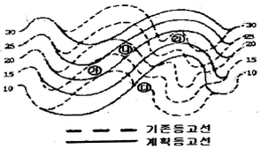
- ㉮
- ㉯
- ㉰
- ㉱
(정답률: 63%)
46. 수 설계(water design) 과정에서 공간을 구성 연출하기 위한 공간 구성의 틀로 볼 수 없는 것은?
- 골격(spine)
- 세팅(setting)
- 변환(transformation)
- 참여(involvement)
(정답률: 42%)
47. 다음 요소 중 조경색채 계획의 시지각(視知覺)에 가장 크게 영향을 미치는 것은?
- 대상물의 면적의 크기
- 대상물의 무게
- 대상물의 가격
- 대상물의 구조
(정답률: 71%)
48. 제도에서 사용되는 문자에 대한 설명으로 옳지 않은 것은?
- 숫자에는 아라비아 숫자가 주로 쓰인다.
- 문자의 크기는 문자의 폭으로 나타낸다.
- 한글의 서체는 활자체에 준하는 것이 좋다.
- 도면에 사용되는 문자로는 한글, 숫자, 영어(로마자)등이 있다.
(정답률: 60%)
49. 실제 길이 3m는 축척 1/30도면에서 얼마로 나타나는가?
- 1cm
- 10cm
- 3cm
- 30cm
(정답률: 64%)
50. 먼셀기호 2.5YR 4/8에 가장 가까운 색 이름은?
- 갈색
- 밤색
- 대자색
- 호박색
(정답률: 40%)
51. 케빈 린치(Kevin Lynch)가 말하는 도시경관의 구성요소 중 '통로(path)'의 성격으로 가장 거리가 먼 것은?
- 연속성과 방향성이 있다.
- 동선의 네트워크(network)이다.
- 주로 관찰자가 빈번하게 통행하는 지역이다.
- 한 지역을 타 지역과 분리시키는 경계의 역할을 한다.
(정답률: 64%)
52. 조경설계 기준상의 '계단'과 관련된 설명으로 틀린 것은?
- 계단의 폭은 연결도로의 폭과 같거나 그 이상의 폭으로 단 높이는 18cm 이하, 단 너비는 26cm 이상으로 한다.
- 높이 2m를 넘는 계단에는 2m 이내마다 당해 계단의 유효 폭 이상의 폭으로 너비 120cm이상인 참을 둔다.
- 계단의 단 높이가 15cm 이하이고 단비가 30cm 이상일 경우 높이 1m를 초과하는 계단에 양측에 벽이 없는 경우 의무적으로 난간을 두며, 계단 폭이 3m를 초과하면 매 3m 이내마다 난간을 설치한다.
- 옥외에 설치하는 계단의 단수는 최소 2단 이상으로 하며 계단바닥은 미끄러움을 방지할 수 있는 구조로 설계한다.
(정답률: 44%)
53. 다음 그림과 같이 평행선이 사선 때문에 가운데가 굵게 보이는 형태의 착시는?
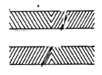
- 대비의 착시
- 분할의 착시
- 반전 실체의 착시
- 각도 또는 방향의 착시
(정답률: 63%)
54. 인간의 환경에 대한 반응 중 가장 먼저 일어나는 현상은?
- 환경지각(environmental perception)
- 환경태도(environmental attitude)
- 행태(behavior)
- 환경인지(environmental cognition)
(정답률: 54%)
55. 다음 중 두 색을 대비 시켰을 시 두 색이 각각 색상환에서 서로 멀어지려는 현상은?
- 보색대비
- 명도대비
- 채도대비
- 색상대비
(정답률: 43%)
56. 자연의 형태에서 찾아볼 수 있는 피보나치수열(Fibonacci Sequence)에 대한 설명이다. 틀린 것은?
- 레오나르도 피보나치가 1200년경 발견하였다.
- 원형울타리의 길이를 계산하는데 사용될 수 있다.
- 식물의 잎차례나 해바라기 씨에 의해 만들어지는 나선형에서 찾아볼 수 있다.
- 수학적으로는 각 수는 그것을 앞서는 2개의 수의 합인 연속의 수를 말한다.
(정답률: 64%)
57. 맑은 날의 하늘이 더욱 파랗게 보이는 것, 해가 뜨고 질 때 생기는 붉은 노을은 빛의 어떤 특성 때문인가?
- 간섭
- 굴절
- 산란
- 회절
(정답률: 54%)
58. 자전거 이용시설의 구조·시설 기준에 관한 규칙상의 자전거 도로의 설계와 관련된 설명으로 틀린 것은?
- 자전거도로의 색상은 별도의 색상 포장 없이 포장재 고유의 색상을 유지한다.
- 자전거도로의 차선은 중앙 분리선은 노란색, 양 측면은 흰색으로 표시한다.
- 자동차의 횡단을 허용하는 자전거도로의 포장구조는 자동차의 중량 등을 고려하여 결정하여야 한다.
- 자전거도로의 포장면에는 물이 고이지 아니하도록 2퍼센트 이상 3퍼센트 이하의 횡단경사를 설치하여야 한다.
(정답률: 45%)
59. 선과 선이 서로 교차할 때 표시법으로 옳지 않은 것은?
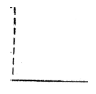
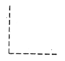
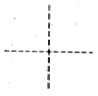
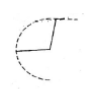
(정답률: 64%)
60. 도로 안내 표지를 디자인할 때 가장 중점을 두어야 하는 것은?
- 배경색과 글씨의 채도차를 고려한다.
- 배경색과 글씨의 색상차를 고려한다.
- 배경색과 글씨의 명도차를 고려한다.
- 배경색과 글씨의 보색대비 효과를 고려한다.
(정답률: 44%)
4과목: 조경식재
61. 다음 중 지표(指標)식재의 기능과 가장 거리가 먼 것은?
- 존재 위치를 알려주는 것
- 바람이 부는 방향과 세기를 알리는 것
- 도로의 경관을 높이는 것
- 식물 생육의 정도를 알아보기 위한 것
(정답률: 43%)
62. 다음 설명하는 식물은?
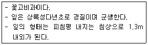
- 바위취
- 프리뮬러
- 삼지구엽초
- 지면패랭이꽃
(정답률: 58%)
63. 다음 중 붉은 색 열매를 볼 수 있는 것이 아닌 것은?
- Lycium chinense
- Elaeagnus multiflora
- Cornus alba
- Ardisia japonica
(정답률: 35%)
64. 고속도로 커브에서 유도기능을 나타내기 위한 식재 방법으로 옳은 것은?
- 교목을 안쪽(內側) 커브에만 심는다.
- 교목을 바깥쪽(外側) 커브에만 심는다.
- 교목을 양쪽 커브에다 심는다.
- 양쪽 다 나무를 심지 않는다.
(정답률: 64%)
65. 다음 중 녹음수로서 가장 적합한 수종은?
- Camellia japonica
- Thuja orientalis L
- Sophora japonica L
- Juniperus chinensis L
(정답률: 52%)
66. 녹음수인 동시에 야생 조류 먹이 수목으로 적합한 것은?
- Cedrus deodara
- Sophora japonica
- Juglans regia
- Sorbus alnifolia
(정답률: 49%)
67. 새로 신축한 아파트는 지하에 주차장이 들어서 있고 주차장 상부에는 플랜터박스가 마련되어 있으나 깊이가 최고 깊이 50cm이다. 이곳에 식재할 적절한 수목이 아닌 것은?
- Buxus koreana
- Nandina domestica
- Berberis amurensis
- Celtis sinensis
(정답률: 57%)
68. 개체군 조절에 영향을 미치는 내적요소가 아닌 것은?
- 종내경쟁
- 이입과 이출
- 생리적이고 행동적인 변화
- 종간경쟁
(정답률: 45%)
69. 조경가 K씨는 해안매립지에 적절한 수종을 선발하기 위해 태안해안국립공원을 찾아 수목 조사를 실시하였다. 다음 중 K씨가 조사한 수종 목록에 적합하지 않는 것은?
- Abies koreana
- Rosa rugosa
- Carpinus turczaninovii
- Pinus thunbergii
(정답률: 40%)
70. 근원 직경 20cm인 수목을 3배 접시분으로 분뜨기를 하려고 한다. 지상부를 제외한 분의 중량은 얼마인가?(단, 접시분의 뿌리분 체적은V=πr3으로 구하고, 단위중량은 1.3ton/m3, 원주율()은 3.14로 계산할 것)
- 0.011ton
- 0.11ton
- 0.026ton
- 0.26ton
(정답률: 34%)
71. 다음 차나무(Theaceae)과 수목 중 낙엽활엽교목인 것은?
- Camellia sinensis
- Cleyera japonica
- Ternstroemia japonica
- Stewartia koreana
(정답률: 43%)
72. 군집의 안정성 및 성숙도를 표현하는 지표로서 중요도, 균재도 지수, 우점도 등이 이용되는 것은?
- 녹지자연도
- 층화도
- 산재도
- 종 다양도
(정답률: 50%)
73. 맑은 날 오후 2시 태양고도가 45°00′인 지대에서 25% 경사를 나타내는 남사면에 수고 10m 의 느티나무가 식재되었을 때 이 나무의 그림자 길이는 얼마인가?
- 5m
- 6m
- 7m
- 8m
(정답률: 30%)
74. 다음 중 Chionanthus retusus Lindl. & Paxton에 대한 설명이 아닌 것은?
- 과명은 물푸레나무과이다.
- 속명 Chionanthus은 Chion 눈(雪)과 anthos 꽃의 합성어이다.
- 우리나라에서 뿐만 아니라 중국, 일본에도 자생한다.
- 암수한그루이다.
(정답률: 56%)
75. 다음 중 원산지가 한국이 아닌 수종은?(오류 신고가 접수된 문제입니다. 반드시 정답과 해설을 확인하시기 바랍니다.)
- Stewartia koreana
- Carpinus turczaninovii
- Paeonia suffruticosa
- Prunus yedoensis
(정답률: 33%)
76. 다음 중 강조식재(accent planting)를 가장 잘 나타낸 것은?
- 동일한 수형의 식재
- 동일 수종의 관목 식재
- 동일 수종의 교목 식재
- 형태, 질감, 색채 등이 그 주위와 대비를 이룬 식재
(정답률: 70%)
77. 환경영향평가 항목 중 식생 조사를 할 때 위성 데이터를 활용하여 얻을 수 있는 유리한 점이 아닌 것은?
- 사실성
- 광역성
- 동시성
- 주기성
(정답률: 51%)
78. 다음 중 방음(防音)식재에 관한 설명으로 옳지 않은 것은?
- 산울타리는 높은 주파수의 음향일수록 잘 흡수한다.
- 방음수벽과 가옥과의 거리는 30m정도가 좋다.
- 방음 식수대의 너비는 약 20~30m 유지되게 조성한다.
- 식수대는 소음원과 수음점의 중간 지점에 조성한다.
(정답률: 49%)
79. 다음 Abies 속에 속하는 식물종으로 가장 적합한 것은?
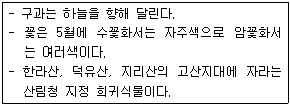
- 구상나무
- 솔송나무
- 가문비나무
- 종비나무
(정답률: 51%)
80. 다음 중 주요 잔디류의 정착 활력도(estavlishmentvigor)가 가장 빠른 것은?
- Perennial ryegrass
- Tall fescue
- Kentucky bluegrass
- Creeping bentgrass
(정답률: 23%)
5과목: 조경시공구조학
81. 콘크리트의 경화나 강도 발현을 촉진하기 위해 실시하는 촉진 양생방법에 속하지 않는 것은?
- 막양색
- 전기양생
- 고온고압양생
- 상압증기양생
(정답률: 52%)
82. 공정관리기법 중 듀폰사의 Walk와 레민턴랜드사의 Kelly에 의하여 개발, 경험이 많은 반복적인 사업 또는 작업표준이 확립된 사업에서 주로 이용하는 관리기법은?
- 횡선식공정표
- 기성고 공정곡선
- PERT
- CPM
(정답률: 52%)
83. 지오이드(Geoid)에 관한 설명으로 틀린 것은?
- 하나의 물리적 가상면이다.
- 평균 해수면과 일치하는 등포텐셜면이다.
- 지오이드면과 기준 타원체면과는 일치한다.
- 지오이드 상의 어느 점에서나 중력 방향에 연직이다.
(정답률: 61%)
84. 일반적으로 도로와 하수도의 중심선과 같은 직선적인 구조물의 위치를 도면화 시킬 때 사용하는 방법 중 가장 적합한 것은?
- 좌표
- 측점
- 거리
- 단면도
(정답률: 43%)
85. 토사의 절취 후 운반 작업거리가 50~60m 이내, 최대 100m의 배토작업에 가장 합리적으로 사용할 수 있는 배토정지용 건설기계 장비는?
- 불도저(bull dozer)
- 덤프트럭(dump truck)
- 로더(loader)
- 백호우(back hoe)
(정답률: 56%)
86. 폭원 10m의 포장도로에 측구를 양편에 만들되 측구간의 간격(중심 간의 거리)을 200m로 하고 강우 강도가 100mm/hr일 때 편도측구에 유입하는 1초간의 유량(m3/sec)은 약 얼마인가? (단, 유출계수를 1로 하고, 유출량은 노면에 내린 우수만을 고려한다.)
- 0.0139
- 0.0278
- 0.⑤56
- 0.1112
(정답률: 35%)
87. 다음 중 콘크리트의 공기량에 대한 설명으로 틀린것은?
- 공기량이 많을수록 슬럼프는 증대한다.
- 공기량이 많을수록 강도는 저하한다.
- AE공기량은 진동을 주면 감소한다.
- AE공기량은 온도가 높아질수록 증가한다
(정답률: 42%)
88. 다음 중 장주(長柱)의 설명으로 옳지 않은 것은?
- 장주는 세장비가 일정한 값 이상이 되는 기둥을 말하며, 좌굴에 의해 파괴되는 기둥을 말한다.
- 단면2차 모멘트가 최대인 축은 그만큼 휨에 대하여 약하므로 좌굴을 일으키게 된다.
- 장주의 좌굴응력(강도)을 계산할 때는 좌굴에 대한 안전을 고려하여 최소 단면2차반지름이 되도록 설계한다.
- 좌굴(buckling)현상은 단면에 비하여 길이가긴 장주에서 중심축 하중을 받는데도 부재의 불균일성에 기인하여 하중이 집중되는 부분에 편심 모멘트가 발생함에 따라 압축응력이 허용강도에 도달하기 전에 휘어져 버리는 현상이다.
(정답률: 32%)
89. 매스콘크리트에 대한 설명 중 옳지 않은 것은?
- 온도균열방지 및 제어 방법으로 프리쿨링 및 파이프 쿨링 방법 등이 이용되고 있다.
- 콘크리트의 온도상승을 감소시키기 위해 소요의 품질을 만족시키는 범위 내에서 단위 시멘트양이 적어지도록 배합을 선정하여야 한다.
- 수축이음을 설치할 경우 계획된 위치에서 균열 발생을 확실히 유도하기 위해서 수축이음의 단면 감소율을 10% 이상으로 하여야 한다.
- 매스콘크리트로 다루어야 하는 구조물의 부재치수는 일반적으로 표준으로서 넓이가 넓은 평판구조에서는 두께 0.8m 이상으로 한다.
(정답률: 45%)
90. 목재에 반복하여 하중을 가하면 기계적 성질이 저하 하여 비교적 작은 하중에도 마지막에는 파괴되었는데 이때의 응력은?
- 항복점
- 피로한도
- 비례한도
- 탄성한도
(정답률: 56%)
91. 시방서 작성 시의 주의사항에 대한 설명으로 부적합한 것은?
- 시공순서에 따라 빠짐없이 기재한다.
- 중복되지 않고 간단명료하게 작성한다.
- 공법 및 마무리 정도를 명확히 규정한다.
- 재료에 대한 공사비의 내역을 정확하게 기재한다.
(정답률: 58%)
92. 다음 중 덤프트럭에 대한 설명으로 옳지 않은 것은?
- 무한 궤도식은 이동속도가 느리다.
- 적재함을 기울여 흙을 방출한다.
- 적재기계를 고려하여 적재용량을 결정한다.
- 운반도로의 조건이 작업량에 영향을 준다.
(정답률: 55%)
93. 다음 직사각형 단면(30cm x 20cm)을 가지는 보에 최대 휨모멘트(M)이 20kN·m 작용할 때 최대 휨 응력은?
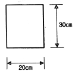
- 3.33MPa
- 4.44MPa
- 5.56MPa
- 6.67MPa
(정답률: 29%)
94. 다음 옥외조명에 관한 사항으로 옳은 것은?
- 광도(光度)는 단위 면에 수직으로 떨어지는 광속밀도로서 단위는 룩스(lx)를 쓴다.
- 수은등은 고압나트륨에 비해 2배 이상의 효율을 가지고 있다.
- 도로 조명은 휘도 차에서 오는 눈부심을 줄이기 위해 광원을 멀리한다.
- 교차로에서는 조명등의 높이가 매우 높으며, 간격은 10m정도가 좋고, 아래의 여러 방향으로 방사하도록 한다.
(정답률: 58%)
95. 다음 그림의 면적은 심프슨(simpson) 제1법칙을 이용하여 구하면 얼마인가?
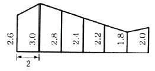
- 28.93m2
- 29.00m2
- 29.10m2
- 29.1m2
(정답률: 49%)
96. 다음 조적공사의 설명으로 옳은 것은?
- 네덜란드식은 마구리와 길이 놓기를 반복하여 서로 켜마다 어긋쌓기하여 통줄눈이 생기지 않는다.
- 영국식은 5단까지는 길이쌓기하고 그 위에 한 켜는 마구리쌓기로 뒷벽돌에 물려 쌓는다.
- 표준형 벽돌 규격은 210×100×60이며, 내화벽돌 규격은 190×90×50 이다.
- 벽돌쌓기에서 가로·세로 줄눈의 나비는 특별히 지정하지 않을 경우 10mm를 표준으로 한다.
(정답률: 58%)
97. 다음 표준품셈에 대한 설명으로 옳은 것은?
- 품셈이란 인간이나 기계가 목적물을 완성하기 위하여 단위 물량 당 소요되는 물질과 노력을 수량으로 표시한 것이다.
- 표준품셈 기준은 현장 조건에 따라 변동이 전혀 불가능하여 불합리한 공사비 산출을 초래할 수 있다.
- 표준품셈의 적용은 특수한 공법과 공종에 한하여 공사비 산출에 적용된다.
- 표준품셈에 적용되는 노무비 단가는 각 지역 실정에 적합하도록 차등 적용한다.
(정답률: 67%)
98. ABCD로 조성되는 면적을 절토로만 평탄하게 하려면 계획지반의 마감높이를 어떻게 정하여야 하는가?
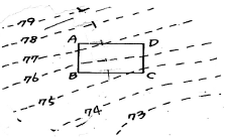
- 74.5m
- 75.5m
- 77.0m
- 79.0m
(정답률: 51%)
99. 평균 뒷길이가 0.6m, 단위중량이 2.65ton /m3, 공극율이 35%, 실적율이 65%일 때, 자연석을 20m2면적에 쌓을 때 자연석 쌓기 중량은?
- 1.03ton
- 11.13ton
- 20.67ton
- 34.85ton
(정답률: 41%)
100. 건조할 경우 흙의 안식각 크기 비교를 틀리게 나타낸 것은?
- 점토 ＞ 모래
- 모래 ＞ 점토
- 자갈 ＞ 점토
- 자갈 ＞ 모래
(정답률: 51%)
6과목: 조경관리론
101. 다음 질소 비료의 형태 중 일반적으로 작물이 직접 흡수할 수 없는 것은?
- 무기태질소
- 유리태질소
- 질산태질소
- 암모늄태질소
(정답률: 49%)
102. 다음 유희시설물 중 정글짐, 철봉 등의 현수운동계 놀이 시설은 어느 시설로 분류되는가?
- 동적놀이시설
- 정적놀이시설
- 조합놀이시설
- 이동식놀이시설
(정답률: 51%)
103. 수목의 부정아(不定芽)를 유도하는 방법으로 가장 거리가 먼 것은?
- 전정
- 엽면시비
- 단근(斷根)
- 가지 비틀기
(정답률: 55%)
104. 진밀도가 2.5g/cm3이고 가밀도가 1.0g/cm3인 토양의 공극률은 몇 %인가?
- 40
- 45
- 53
- 60
(정답률: 44%)
1⑤. 다음 중 잔디밭에서 제초제로 사용하기 부적절 한 약제는?
- 에마멕틴벤조에이트 입상수화제
- 엠시피에이 액제
- 페녹슐람 액상수화제
- 디캄바 액제
(정답률: 38%)
106. 수화제와 비교한 유제(乳劑)에 대한 설명으로 옳지 않은 것은?
- 수화제보다 제조비가 높다
- 수화제보다 약효가 다소 낮다
- 수화제보다 포장·수송·보관이 어렵다.
- 수화제보다 살포액의 조제가 편리하다.
(정답률: 50%)
107. 토성 분류에 대한 설명 중 맞는 것은?
- 토성은 입경구분에서 구한 모래, 미사, 점토 함량을 입경분포도에 적용시켜 구분한다.
- 전통적인 토성삼각도는 아랫부분에 점토 함량, 왼쪽 경사면에 모래 함량, 오른쪽 경사면에 미사함량을 나타낸다.
- 토성명은 직선들의 만나는 점이 두 토성의 경계선에 위치할 경우에는 작은 입자가 많은 토성으로 정한다.
- 토성을 분류할 때에는 3mm 이하의 토양입자만을 대상으로 한다.
(정답률: 35%)
108. 다음 중 정원수 이식 직후에 실시하는 전정의 가장 주요한 목적은?
- 수목의 조형을 위해
- 개화결실을 촉진하기 위해
- 생리조절을 위해
- 생장을 조장하기 위해
(정답률: 53%)
109. 식물관리에 있어서 수림지 관리 항목으로 가장 부적합한 것은?
- 하예
- 제벌, 간벌
- 병·충해방지
- 개화조절 전정
(정답률: 41%)
110. 잔디는 종류에 따라 생장습성이 다르다. 다음 중 적정 상대예고(刈高)를 가장 낮게 잘라 주어야 하는 것은?
- creeping bentgrass
- smooth brome
- tall fescue
- kentucky bluegrass
(정답률: 46%)
111. 파이토플라스마에 의한 수목병의 전염방법에 속하지 않는 것은?
- 즙액전염
- 접목전염
- 새삼전염
- 매개충전염
(정답률: 29%)
112. 수목의 원인 중 뿌리혹병, 불마름병 등의 원인이 되는 생물적 원인은?
- 세균
- 선충
- 곰팡이
- 바이러스
(정답률: 43%)
113. 식재한 조경 수목을 보호하기 위하여 나무의 뿌리분 위의 둘레에 짚, 낙엽 등으로 피복하여 얻을 수 있는 효과가 아닌 것은?
- 토양수분 증산억제
- 잡초발생 억제
- 유기질 비료제공
- 관수작업의 용이
(정답률: 65%)
114. 표면 배수시설 중 측구(側溝)에 관한 설명으로 옳지 않은 것은?
- 토사 측구는 단면(斷面) 및 저면(低面)구배를 일정하게 유지한다.
- 토사 측구의 침식이나 퇴적이 현저한 지점은 필요에 따라 콘크리트 측구로 개조하는 것이 필요하다.
- 콘크리트 측구는 측벽 주위의 토압에 눌려 넘어지거나 파손되는 경우가 많다.
- 일반적으로 제품(concrete precast)으로 된 측구는 연결 이음새의 결함이 적어 보편적으로 사용된다.
(정답률: 38%)
115. 다음 중 토사포장의 보수방법으로 옳지 않은 것은?
- 먼지 억제를 위해 살수를 통한 일시적 방법이나 염화칼슘을 사용한 약품살포법이 있다.
- 요철부의 처리는 배수가 잘 되는 모래, 자갈로 채우고 다짐을 한다.
- 진창흙의 방지를 위해 배수시설을 하거나 지하수위를 저하시킨다.
- 노면 횡단경사를 8~10% 이하로 유지하고 지표수는 신속히 배제한다.
(정답률: 54%)
116. 짧은 폐쇄·회복기에도 최대한의 회복효과를 얻을 수 있고, 따라서 이용자에게 불편을 적게 줄 수 있으며, 특히 손상이 심한 부지에 가장 이상적인 레크리에이션 공간의 관리 방안은?
- 완전방임형 관리 전략
- 폐쇄 후 자연회복형
- 폐쇄 후 육성관리
- 순환식 개방에 의한 휴식기간 확보
(정답률: 54%)
117. 공공 조경물을 이용하는 이용자의 지도방법으로 가장 부적합한 것은?
- 정기지도
- 안내·주의
- 순회지도
- 조언·규제
(정답률: 57%)
118. 잣송이를 가해하여 수확을 감소시키는 중요한 해충이며, 구과속의 가해부위에 벌레똥을 채워놓고 외부로도 똥을 배출하여 구과표면에 붙여 놓으며 신초에도 피해를 주는 해충은?
- 소나무좀
- 낙엽송잎벌
- 솔수염하늘소
- 솔알락명나방
(정답률: 47%)
119. 해충의 구제방법들 중 기계적 방제법에 해당하는 것은?
- 인공포살(人工捕殺)
- 온도(溫度)처리법
- 접촉살충제살포(接觸殺蟲濟撒布)
- 기생봉(寄生蜂) 이용
(정답률: 56%)
120. 일반적으로 잡초에 의한 피해를 줄이기 위하여 철저히 방제를 하여야 할 작물의 생육 시기는?
- 생육초기
- 생육중기
- 생육 중 ~ 후기
- 생육후기
(정답률: 60%)